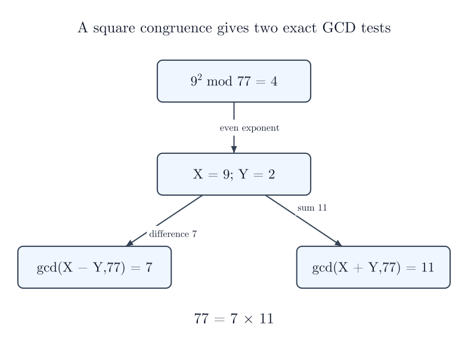
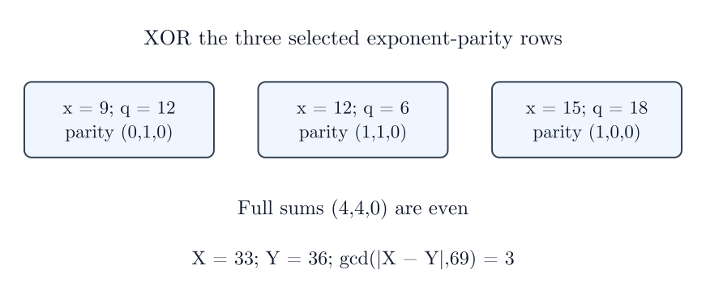
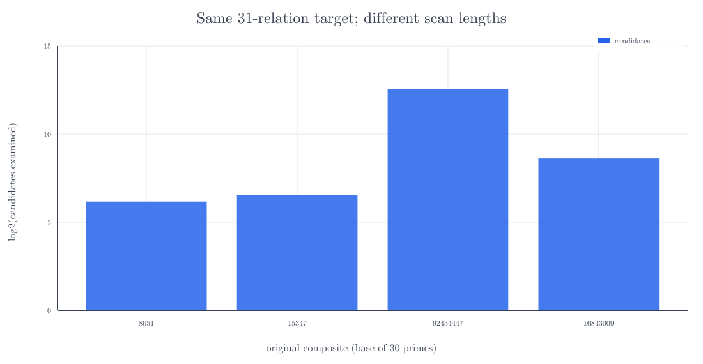
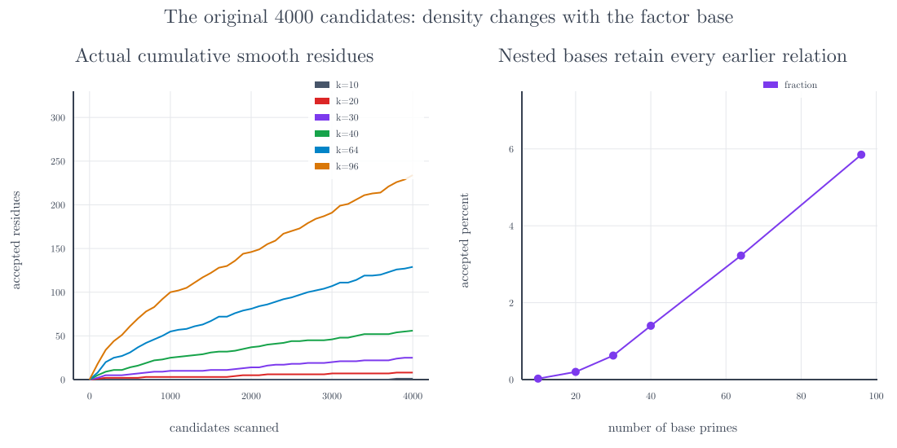
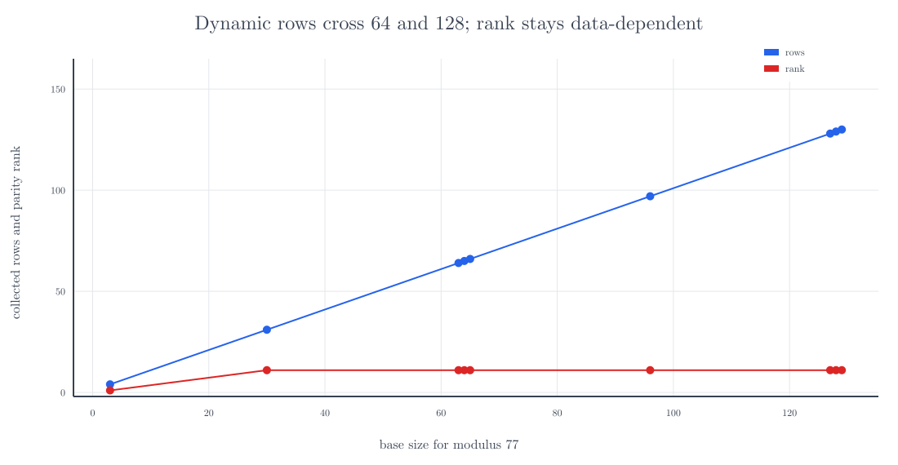

Dixon Factorisation: Smooth Squares, Actual Dependencies and Honest Search Limits
Abstract
Given a composite integer, we want a divisor strictly between one and the integer. Trial division can require many unsuccessful divisibility checks before finding one. Congruences of squares turn this search into collecting smooth residues and finding a parity dependency. We start with 77 and a three-relation example for 69, inspect actual exponent vectors and GCD operands, and retain the original four composites and 4,000-candidate smoothness experiment. The canonical C++ kernel now uses dynamic parity vectors, exact full-width modular arithmetic, checked inputs and bounded owned evidence. Measurements distinguish smooth-relation density from a guaranteed factor, and this deterministic teaching scan from Dixon's random-sampling theorem.
A first square congruence: split 77 by hand
A nontrivial divisor f satisfies 1<f<n and n mod f=0; it need not be prime. For n=77, begin at floor(sqrt(77))+1=9. The first square residue is 9² mod 77=4=2², smooth over base [2,3,5]. Its exponent vector (2,0,0) has zero parity already, so one relation suffices. We get X=9 and Y=2:
The shared batch solver collects up to k+1 relations before elimination; it does not stop collecting at this first square. Here its four relations arrive after ten candidates. The first dependency it tests still selects only relation zero. All diagram labels below are computed from that run.
#include <dm/dm.hpp>
int main() {
std::filesystem::create_directories("build");
const auto t=dm::algorithms::dixon_factor_trace(77,3,10);
const auto& r=t.collection.relations.front();
const auto& c=t.dependencies.front();
std::print("First relation: x={}, residue={}, exponents {}.\n",r.x,r.residue,r.exponents);
std::print("Batch: {} candidates, {} relations, rank {}.\n",t.collection.scanned,t.collection.relations.size(),t.rank);
std::print("X={}, Y={}, minus GCD={}, plus GCD={}; returned factor {}.\n",c.X,c.Y,c.gcd_minus,c.gcd_plus,t.factor);
dm::graphics::Diagram d(78,1100);
dm::graphics::DiagramNodeStyle box;
box.width=3.3; box.height=.9; box.font_size=23;
d.node("square",{0,2},std::format("{}² mod 77 = {}",r.x,r.residue),box)
.node("roots",{0,0},std::format("X = {}; Y = {}",c.X,c.Y),box)
.node("minus",{-3,-2},std::format("gcd(X − Y,77) = {}",c.gcd_minus),box)
.node("plus",{3,-2},std::format("gcd(X + Y,77) = {}",c.gcd_plus),box);
d.edge("square","roots","even exponent")
.edge("roots","minus",std::format("difference {}",c.X-c.Y))
.edge("roots","plus",std::format("sum {}",c.X+c.Y))
.text({0,3.15},"A square congruence gives two exact GCD tests",25)
.text({0,-3.1},std::format("{} = {} × {}",t.collection.n,t.factor,t.collection.n/t.factor),25)
.save_svg("build/dixon_77.svg");
}First relation: x=9, residue=4, exponents [2, 0, 0]. Batch: 10 candidates, 4 relations, rank 1. X=9, Y=2, minus GCD=7, plus GCD=11; returned factor 7.

From smooth residues to a parity dependency
Let p₁,…,pₖ be the first k primes. For consecutive x values, form the least nonnegative square residue q=x² mod n. Ignore q=0 before trial division. A positive residue is accepted exactly when
Record full exponents E and reduce each row modulo two to form A. A nonempty selection s∈GF(2)^R with Aᵀs=0 makes every summed exponent even. Define
Multiplying the recorded congruences proves X²≡Y² mod n. Hence n divides (X−Y)(X+Y), and either GCD may expose a factor. If X≡Y or X≡−Y, the GCDs can be one and n. A dependency alone is insufficient for success.
For 69 and base [2,3,5], the first three accepted relations are 9²≡12=2²3, 12²≡6=2·3 and 15²≡18=2·3². Their parities (0,1,0), (1,1,0), (1,0,0) XOR to zero. The selected full exponents sum to (4,4,0), so Y=2²3²=36 and X=9·12·15 mod 69=33. The difference GCD is three. The fourth collected relation is retained but is not selected by this first tested dependency.
#include <dm/dm.hpp>
int main() {
std::filesystem::create_directories("build");
const auto t=dm::algorithms::dixon_factor_trace(69,3,100);
std::print("| relation | x | square residue | exponents | parity |\n| ---: | ---: | ---: | :--- | :--- |\n");
for(std::size_t i=0;i<t.collection.relations.size();++i) {
const auto& r=t.collection.relations[i];
std::vector<unsigned> parity;
for(auto e:r.exponents) parity.push_back(e%2);
std::print("| {} | {} | {} | {} | {} |\n",i,r.x,r.residue,r.exponents,parity);
}
const auto& c=t.dependencies.front();
std::print("\nSelected rows {}; full sums {}; X={}, Y={}.\n",c.relation_indices,c.exponent_sums,c.X,c.Y);
std::print("Rank {}; row XORs {}; GCDs {} and {}; factor {}.\n",t.rank,t.row_xors,c.gcd_minus,c.gcd_plus,t.factor);
dm::graphics::Diagram d(78,1100);
dm::graphics::DiagramNodeStyle box;
box.width=3; box.height=1.2; box.font_size=23;
for(std::size_t j=0;j<c.relation_indices.size();++j) {
const auto i=c.relation_indices[j];
const auto& r=t.collection.relations[i];
d.node(std::to_string(i),{3.7*j,0},std::format("x = {}; q = {}\nparity ({},{},{})",r.x,r.residue,r.exponents[0]%2,r.exponents[1]%2,r.exponents[2]%2),box);
}
d.text({3.7,1.3},"XOR the three selected exponent-parity rows",26)
.text({3.7,-1.4},std::format("Full sums ({},{},{}) are even",c.exponent_sums[0],c.exponent_sums[1],c.exponent_sums[2]),25)
.text({3.7,-2.2},std::format("X = {}; Y = {}; gcd(|X − Y|,69) = {}",c.X,c.Y,c.gcd_minus),24)
.save_svg("build/dixon_parity.svg");
}| relation | x | square residue | exponents | parity |
|---|---|---|---|---|
| 0 | 9 | 12 | [2, 1, 0] | [0, 1, 0] |
| 1 | 12 | 6 | [1, 1, 0] | [1, 1, 0] |
| 2 | 15 | 18 | [1, 2, 0] | [1, 0, 0] |
| 3 | 18 | 48 | [4, 1, 0] | [0, 1, 0] |
Selected rows [0, 1, 2]; full sums [4, 4, 0]; X=33, Y=36. Rank 2; row XORs 4; GCDs 3 and 69; factor 3.

What elimination guarantees, and what it does not
With R rows and k columns, rank(A)≤k. Rank-nullity therefore gives at least R−k independent dependencies when R>k. The implementation stores one identity selection row beside every parity row. Every row swap and XOR acts on both arrays. The invariant “current parity row equals the XOR of selected original rows” proves that a final zero row supplies a valid square congruence. Full exponents remain untouched for computing Y.
The solver scans at most two million candidates, collects at most k+1 relations, eliminates the complete batch, and tests its zero rows in final row order until one succeeds. Fewer than k+1 rows may already be dependent; a singleton zero row is eligible. If all tested dependencies are trivial, it returns zero. It does not combine different zero rows, collect another batch, certify primality or recursively split the returned divisor.
Let S be the candidates examined, R≤k+1 the accepted rows, and wₚ=ceil(k/64), wᵣ=ceil(R/64). Trial division uses O(S(k+log n)) modular/division operations. All-row elimination uses O(kR(wₚ+wᵣ)) word operations and O(kR) storage for full exponents, in addition to packed rows. These are operation bounds for this bounded 64-bit implementation, not bit-complexity claims for arbitrary integers. Dixon's paper studies random candidate sequences and an expected subexponential bound; this consecutive scan does not inherit that theorem.
Retain the original four composites and inspect actual success
The next table reproduces all four original factors and adds scan count, rank, row-XOR work, tested dependency count and the successful roots. For 8051, the first dependency is trivial and the second gives 83. For 15347, two trivial dependencies precede the successful one. The returned 161 for 92434447 is composite (7·23), which is a valid proper divisor; this API finds one divisor rather than a complete prime factorisation.
#include <dm/dm.hpp>
int main() {
std::filesystem::create_directories("build");
std::vector<double> scanned;
std::vector<std::string> labels;
std::print("| n | factor | cofactor | candidates | relations | rank | XORs | tested dependencies | X | Y |\n| ---: | ---: | ---: | ---: | ---: | ---: | ---: | ---: | ---: | ---: |\n");
for(std::uint64_t n:{8051ULL,15347ULL,92434447ULL,16843009ULL}) {
const auto t=dm::algorithms::dixon_factor_trace(n,30);
if(!t.factor || n%t.factor || t.factor!=dm::algorithms::dixon_factor(n,30))
throw std::runtime_error("factor mismatch");
const auto& c=t.dependencies.back();
std::print("| {} | {} | {} | {} | {} | {} | {} | {} | {} | {} |\n",n,t.factor,n/t.factor,t.collection.scanned,t.collection.relations.size(),t.rank,t.row_xors,t.dependencies.size(),c.X,c.Y);
scanned.push_back(std::log2(t.collection.scanned));
labels.push_back(std::to_string(n));
}
const auto t=dm::algorithms::dixon_factor_trace(8051,30);
std::print("8051 first dependency: X={}, Y={}, GCDs {} and {}.\n",t.dependencies[0].X,t.dependencies[0].Y,t.dependencies[0].gcd_minus,t.dependencies[0].gcd_plus);
auto p=dm::graphics::RPlot::barplot(scanned,labels,"candidates",{37,99,235});
p.title("Same 31-relation target; different scan lengths")
.x_label("original composite (base of 30 primes)").y_label("log2(candidates examined)")
.y_limits(0,15).size(1100,570).save_svg("build/dixon_batches.svg");
}| n | factor | cofactor | candidates | relations | rank | XORs | tested dependencies | X | Y |
|---|---|---|---|---|---|---|---|---|---|
| 8051 | 83 | 97 | 72 | 31 | 19 | 144 | 2 | 3417 | 4828 |
| 15347 | 103 | 149 | 93 | 31 | 21 | 136 | 3 | 126 | 23 |
| 92434447 | 161 | 574127 | 6049 | 31 | 16 | 143 | 2 | 1376389 | 91058058 |
| 16843009 | 65537 | 257 | 393 | 31 | 11 | 157 | 1 | 5445140 | 136643 |
8051 first dependency: X=7182, Y=7182, GCDs 8051 and 1.

Measure smoothness over the original 4,000-candidate window
The original collector starts at floor(sqrt(92434447))+1=9615 and uses the first thirty primes, ending at 113. It accepts exactly 25 residues in 4,000 candidates: 0.625 percent. That count is below the solver's 31-relation target; the full solver reaches 31 after 6,049 candidates. The fixed-window collection API deliberately keeps scanning after k+1 relations so density experiments do not stop early.
We repeat the same window for nested bases of 10,20,30,40,64 and 96 primes. Every residue smooth over a smaller base remains smooth over a larger one, proving monotonicity of the accepted count for this fixed window. A larger base also requires more trial divisions, more parity columns and a larger target; a density increase alone does not prove a shorter total factorisation. Counts in each half-window illustrate that a finite deterministic sequence need not have a constant local density. The accumulation curves count actual stored offsets at every 100-candidate checkpoint; no independent report-local smoothness algorithm is used.
#include <dm/dm.hpp>
int main() {
std::filesystem::create_directories("build");
const std::vector<dm::graphics::RGB> colors{{71,85,105},{220,38,38},{124,58,237},{22,163,74},{2,132,199},{217,119,6}};
auto cumulative=dm::graphics::RPlot::create();
auto fraction=dm::graphics::RPlot::create();
std::vector<double> bases,percent;
std::size_t series=0,previous=0;
std::print("| base size | largest prime | smooth / 4000 | percent | first 2000 | last 2000 |\n| ---: | ---: | ---: | ---: | ---: | ---: |\n");
for(int k:{10,20,30,40,64,96}) {
const auto c=dm::algorithms::dixon_collect(92434447,k,4000);
if(c.relations.size()<previous) throw std::runtime_error("nested-base monotonicity failed");
previous=c.relations.size();
const auto first=std::ranges::count_if(c.relations,[](const auto& r){return r.offset<2000;});
std::print("| {} | {} | {} | {:.3f} | {} | {} |\n",k,c.base.back(),c.relations.size(),100.0*c.relations.size()/c.scanned,first,c.relations.size()-first);
std::vector<double> x,y;
for(std::size_t checkpoint=0;checkpoint<=4000;checkpoint+=100) {
x.push_back(checkpoint);
y.push_back(std::ranges::count_if(c.relations,[checkpoint](const auto& r){return r.offset<checkpoint;}));
}
cumulative.line(x,y,std::format("k={}",k),colors[series++]);
bases.push_back(k); percent.push_back(100.0*c.relations.size()/c.scanned);
}
cumulative.title("Actual cumulative smooth residues").x_label("candidates scanned").y_label("accepted residues").y_limits(0,330);
fraction.line(bases,percent,"fraction",{124,58,237})
.points(bases,percent,"",{124,58,237},5)
.title("Nested bases retain every earlier relation").x_label("number of base primes").y_label("accepted percent").y_limits(0,7.5);
dm::graphics::RLayout::create(1,2).add(cumulative).add(fraction)
.size(1100,550).title("The original 4000 candidates: density changes with the factor base")
.fit_panels().save_svg("build/dixon_density.svg");
}| base size | largest prime | smooth / 4000 | percent | first 2000 | last 2000 |
|---|---|---|---|---|---|
| 10 | 29 | 1 | 0.025 | 0 | 1 |
| 20 | 71 | 8 | 0.200 | 5 | 3 |
| 30 | 113 | 25 | 0.625 | 14 | 11 |
| 40 | 173 | 56 | 1.400 | 37 | 19 |
| 64 | 311 | 129 | 3.225 | 81 | 48 |
| 96 | 503 | 234 | 5.850 | 146 | 88 |

Safe machine-word boundaries, explicit budgets and failure controls
The old code used one uint64_t for each parity row and each selection row. A base of 64 primes permits 65 collected rows, making the identity shift by 64 undefined. A compiled unchanged-source probe catches that shift; another catches division by zero for modulus zero. The canonical kernel now stores dynamically sized packed words and validates inputs before allocation. Its supported base count is 1…4096 and modulus is at least two. Exact widened modular products handle the full uint64_t range; the integer square root uses exact comparisons, including values next to 2⁶⁴.
A zero candidate budget means no search and returns factor zero. Zero residues are excluded before division; they are counted, never divided repeatedly. Prime moduli can generate smooth relations and dependencies, but no proper factor. Failure is also possible for composite inputs under an insufficient budget or a batch of unhelpful congruences.
Owned capture has a default one-million scalar-cell cap. A collection counts k base cells and k+3 cells per accepted relation (x,residue,offset, and k exponents). A tested dependency adds its selected-index count, k full exponent sums and four arithmetic values. The cap is checked before each affected capture. Zero disables only this optional cap; domain, endpoint, count and container limits remain. It excludes vector objects and scratch elimination storage; it is not a byte quota. The compact factor function retains no dependency history and has no optional cap. The following executable shows exact versus one-short capture limits, prime and zero-budget failure, and row counts crossing both 64 and 128.
#include <dm/dm.hpp>
int main() {
std::filesystem::create_directories("build");
const auto t=dm::algorithms::dixon_factor_trace(77,3,10);
const auto exact=dm::algorithms::dixon_factor_trace(77,3,10,t.captured_cells);
std::size_t rejected=0;
try {(void)dm::algorithms::dixon_factor_trace(77,3,10,t.captured_cells-1);}
catch(const std::length_error&) {++rejected;}
try {(void)dm::algorithms::dixon_factor(0,3);}
catch(const std::invalid_argument&) {++rejected;}
try {(void)dm::algorithms::dixon_collect(77,0,0);}
catch(const std::invalid_argument&) {++rejected;}
std::print("Exact cap {} cells returns {}; expected rejections {}.\n",t.captured_cells,exact.factor,rejected);
const auto prime=dm::algorithms::dixon_factor_trace(13,3,20);
const auto zero=dm::algorithms::dixon_factor_trace(77,3,0);
const auto empty=dm::algorithms::dixon_collect(4,3,20);
const auto wide=dm::algorithms::dixon_collect(std::numeric_limits<std::uint64_t>::max(),3,0);
std::print("Prime 13: factor {}, tested dependencies {}. Composite 77 with zero budget: factor {}.\n",prime.factor,prime.dependencies.size(),zero.factor);
std::print("Modulus 4: {} zero residues in {} candidates. Full-width modulus start {}.\n",empty.zero_residues,empty.scanned,wide.start);
std::vector<double> x,rows,rank;
std::print("\n| base size | collected rows | rank | nullity | returned factor |\n| ---: | ---: | ---: | ---: | ---: |\n");
for(int k:{3,30,63,64,65,96,127,128,129}) {
const auto a=dm::algorithms::dixon_factor_trace(77,k,400);
if(a.collection.relations.size()!=static_cast<std::size_t>(k+1)) throw std::runtime_error("incomplete control batch");
std::print("| {} | {} | {} | {} | {} |\n",k,a.collection.relations.size(),a.rank,a.collection.relations.size()-a.rank,a.factor);
x.push_back(k); rows.push_back(a.collection.relations.size()); rank.push_back(a.rank);
}
auto p=dm::graphics::RPlot::create();
p.line(x,rows,"rows",{37,99,235}).points(x,rows,"",{37,99,235},5)
.line(x,rank,"rank",{220,38,38}).points(x,rank,"",{220,38,38},5)
.title("Dynamic rows cross 64 and 128; rank stays data-dependent")
.x_label("base size for modulus 77").y_label("collected rows and parity rank")
.y_limits(-2,165).size(1100,570).save_svg("build/dixon_limits.svg");
}Exact cap 35 cells returns 7; expected rejections 3. Prime 13: factor 0, tested dependencies 2. Composite 77 with zero budget: factor 0. Modulus 4: 10 zero residues in 20 candidates. Full-width modulus start 4294967296.
| base size | collected rows | rank | nullity | returned factor |
|---|---|---|---|---|
| 3 | 4 | 1 | 3 | 7 |
| 30 | 31 | 11 | 20 | 7 |
| 63 | 64 | 11 | 53 | 7 |
| 64 | 65 | 11 | 54 | 7 |
| 65 | 66 | 11 | 55 | 7 |
| 96 | 97 | 11 | 86 | 7 |
| 127 | 128 | 11 | 117 | 7 |
| 128 | 129 | 11 | 118 | 7 |
| 129 | 130 | 11 | 119 | 7 |

Verification and practical scope
Native tests compare 9,568 combinations of modulus 2…300, base size 1…8 and budgets 0,1,7,60 against an independent consecutive-residue collector and Boolean-matrix elimination. Additional fixed-window comparisons cover 714 modulus/base pairs. Each trace checks selected original rows, even full sums, modular roots, both GCDs, rank, whole-row XOR counts and logical capture accounting. Controls exercise prime, even, square and zero-residue inputs; full-width modular products and square roots; high parity bits and selection rows around 63/64/65 and 127/128/129; exact and one-short caps; invalid inputs, scan-endpoint overflow and owned copies. The original four factors and 25-relation density are retained.
This is a readable 64-bit square-relation method, not an arbitrary-precision factoring service. The measured density curves and operation counts support the bounded examples. They do not show stationary independent sampling, a guaranteed factor per dependency, a proof of primality after failure, or a subexponential bound for the sequential implementation.
References
[Dixon's original paper](https://pages.cs.wisc.edu/~cs812-1/dixon.pdf), J. D. Dixon (1981), “Asymptotically Fast Factorization of Integers”, Mathematics of Computation 36(153),255–260, [doi:10.1090/S0025-5718-1981-0595059-1](https://doi.org/10.1090/S0025-5718-1981-0595059-1), provides the square-relation/GF(2) construction and analyses random lists. The input ordering, one-batch stopping rule, exact integer arithmetic, dynamic storage and capture policy here describe the executed datamunge variant rather than claims about the paper's random-sampling algorithm.